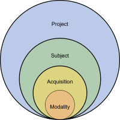

The umIToolbox application is specifically tailored for efficiently managing high-throughput mesoscopic imaging experiments. It establishes a well-organized workspace that empowers users to effortlessly oversee and streamline a substantial volume of datasets while automating data processing tasks spanning multiple directories. In addition, it provides a set of tools to visualize grouped data and perform statistical analysis.
A typical imaging project consists of one or more cohorts of subjects (e.g. mice) that undergo one or more acquisition (i.e. recording) sessions. Frequently, other recording modalities are associated with the imaging data such as behavioral responses, eye/body tracking, etc. The toolbox follows the same organization principle where one can manage subjects, acquisitions and recording modalities for a given project.

Conceptual organization of a typical imaging project.
The umIToolbox application leverages the same conceptual framework to systematically structure experimental data and metadata while automating data processing. It seamlessly integrates data visualization and analysis within a unified interface where the user can control all the aspects of a typical mesoscale imaging project.
The main features of umIToolbox app